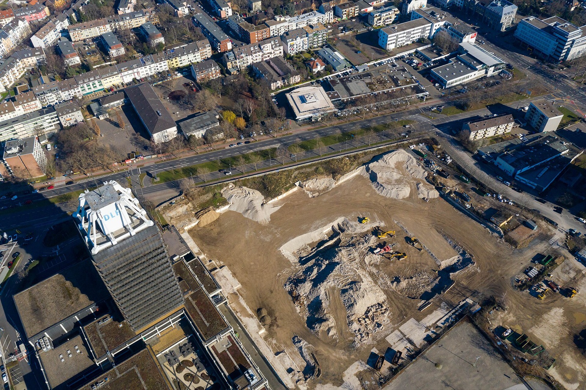
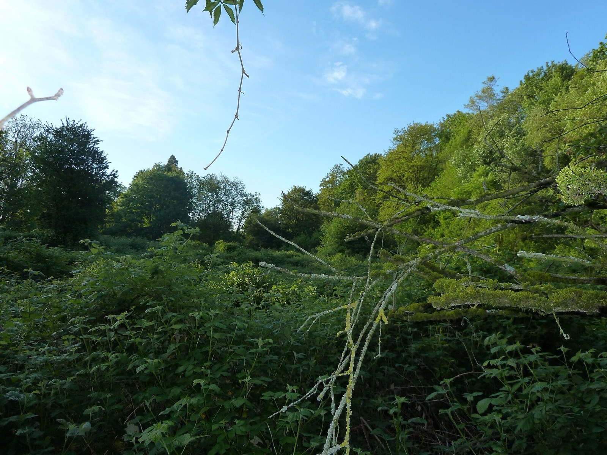

Immobilie in Raderberg verkaufen?Reden wir zuerst über das, was nebenan gebaut wird.
Die Parkstadt Süd verändert Raderberg über Jahre hinweg. Was das für Ihre Immobilie bedeutet, hängt davon ab, wo genau sie steht.
Was könnte Ihre Immobilie in Köln-Raderberg erzielen?
In sechs Schritten zu einer realistischen Einschätzung. Kostenlos, unverbindlich und ohne Vertrag. Womit fangen wir an?
Andere Objektart wählenDrei Zahlen, die den Stadtteil beschreiben
Raderberg zählt 6.751 Einwohner und 3.990 Wohnungen. In diese vergleichsweise kleine Zahl hinein wurden 2025 234 Wohnungen neu fertiggestellt. Gemessen am Bestand sind das 5,86 Prozent Zuwachs in einem einzigen Jahr — Rang 3 unter allen Kölner Stadtteilen, hinter Marienburg und Elsdorf. Und das war der Auftakt.
Die Parkstadt Süd entsteht auf dem Gelände zwischen Bahntrasse und Innerem Grüngürtel. Nach der amtlichen Vorausberechnung führt allein dieses Projekt mit über 3.000 geplanten Wohneinheiten ab 2030 zu rund 8.500 Menschen im Erstbezug — und dazu, dass Raderberg seine Bevölkerung bis 2035 verdoppelt. Kein anderer Kölner Stadtteil steht vor einer vergleichbaren Veränderung.
Was daraus für Ihre Immobilie folgt — und was nicht. Aus einer großen Stadtentwicklung lässt sich der Wert einer einzelnen Immobilie nicht ableiten. Eine bessere Anbindung, neue Grünflächen und mehr Nahversorgung können eine Lage aufwerten. Gleichzeitig gilt der schlichte Zusammenhang: Wer verkauft, während in Sichtweite Tausende neue Wohnungen auf den Markt kommen, hat mehr Konkurrenz — und Neubau zieht genau die Käufer an, die Erstbezug und aktuellen Energiestandard suchen. Für Eigentümer ist die Parkstadt Süd deshalb vor allem eines: ein Grund, den Verkaufszeitpunkt bewusst zu wählen, statt ihn dem Zufall zu überlassen.
Die Parkstadt Süd: was geplant ist — und wie weit sie ist
Über kaum ein Kölner Bauvorhaben wird so viel geschrieben und so wenig Konkretes gesagt. Deshalb hier die Zahlen, die sich belegen lassen, und der Verfahrensstand, den Werbetexte gern auslassen.
Der Verfahrensstand — der Punkt, der beim Verkauf zählt
Die Parkstadt Süd ist noch nicht beschlossen, sondern in Planung. Der Aufstellungsbeschluss für den Bebauungsplan datiert vom 7. November 2024, die frühzeitige Öffentlichkeitsbeteiligung lief vom 26. Februar bis 21. März 2025. Bis zum Satzungsbeschluss, zur Erschließung und zum ersten Bezug vergehen weitere Jahre — die städtische Bevölkerungsvorausberechnung setzt den Erstbezug entsprechend ab 2030 an.
Für Eigentümer ist das keine Nebensache, sondern der Kern der Sache. Wer heute verkauft, verkauft in einen Markt, in dem die Parkstadt Süd eine Ankündigung ist. Ein Käufer zahlt dafür nichts — bezahlt wird, was vorhanden ist, nicht was in Aussicht steht.
Heute
Die Fläche ist Planungsgebiet. Für Käufer zählt allein die vorhandene Lage — Anbindung, Nachbarschaft, Grün. Wer verkauft, konkurriert mit dem normalen Bestandsangebot.
Bauphase
Erschließung und Hochbau prägen das Umfeld: Baustellenverkehr, Lärm, veränderte Wege. Das ist die schwierigste Zeit für einen Verkauf in unmittelbarer Nähe — und für Käufer die Phase, in der sie Nachlässe verhandeln.
Nach Fertigstellung
Grünverbindung, Nahversorgung und Infrastruktur sind da. Gleichzeitig stehen Tausende neue Wohnungen im Wettbewerb — genau um die Käufer, die Erstbezug und aktuellen Energiestandard wollen.
Welche dieser drei Phasen für Ihre Immobilie die beste ist, hängt vom Objekt ab. Eine gepflegte Altbauwohnung mit Charakter verliert durch Neubau in der Nachbarschaft wenig — sie bedient eine andere Nachfrage. Ein sanierungsbedürftiges Objekt, das ohnehin über den Preis verkauft werden müsste, trifft dagegen ab 2030 auf ein deutlich größeres Angebot.
Dasselbe Projekt, drei sehr verschiedene Stadtteile
Die Parkstadt Süd liegt nicht nur in Raderberg. Das Plangebiet erstreckt sich über Zollstock, Raderberg und Bayenthal — und diese drei stehen wirtschaftlich weit auseinander. Für Eigentümer heißt das: Dieselbe Stadtentwicklung bedeutet je nach Adresse etwas anderes.
| Stadtteil | Bestand je m² | Bodenrichtwert | Einwohner | Neubau 2025 | Wohnfläche je Wohnung |
|---|---|---|---|---|---|
| Zollstock | 4.368 € | 1.300 € | 23.729 | 338 | 64,6 m² |
| Raderberg | 5.113 € | 1.505 € | 6.751 | 234 | 69,5 m² |
| Bayenthal | 5.921 € | 2.830 € | 10.967 | 52 | 81,6 m² |
Drei Beobachtungen, die für die Verkaufsstrategie zählen:
- Bayenthal ist die Preislage, Raderberg die Mitte. Der Bodenrichtwert liegt in Bayenthal fast doppelt so hoch wie in Raderberg, der Wohnungspreis aber nur 16 Prozent darüber. Wer in Raderberg ein Grundstück oder Haus verkauft, verkauft deutlich günstigeren Boden bei ähnlichem Wohnwert.
- Zollstock ist das Volumen. Mit 23.729 Einwohnern und 338 fertigen Wohnungen 2025 ist der Nachbarstadtteil um ein Vielfaches größer — und liefert einen guten Teil des Neubauangebots, mit dem Raderberger Verkäufer konkurrieren.
- Raderberg hat die kleineren Wohnungen. 69,5 Quadratmeter im Schnitt gegen 81,6 in Bayenthal. Das verschiebt die Käufergruppe: mehr Paare und Einzelpersonen, weniger Familien — was zur hohen Zahl von Einpersonenhaushalten im Stadtteil passt.
Neubau und Bestand: der Abstand ist hier kleiner als anderswo
Raderberg gehört zu den wenigen Kölner Stadtteilen, für die der Gutachterausschuss beide Werte ausweist — es gab 2025 genug Verkäufe in beiden Segmenten. Das erlaubt einen direkten Vergleich.
Neubau
7.309 €/m²
aus 20 beurkundeten Kaufverträgen
Bestand, Weiterverkauf
5.113 €/m²
aus 13 beurkundeten Kaufverträgen
Abstand
+43 %
Kölner Spitzenwerte liegen bei über 100 %
Gutachterausschuss für Grundstückswerte in der Stadt Köln, Berichtsjahr 2025. Bodenrichtwerte Raderberg: zwei Zonen, 1.350 und 1.660 € je m², Stichtag 1. Januar 2026 (BORIS NRW).
Der Abstand von 43 Prozent ist für Kölner Verhältnisse gering. In Junkersdorf kostet Neubau 130 Prozent mehr als Bestand, in Brück 114 Prozent, in Höhenberg 102. Raderberg liegt im unteren Drittel dieser Rangliste — der Bestand ist hier also vergleichsweise gut bewertet.
Für Eigentümer ist das die bessere Nachricht in diesem Text. Ein kleiner Abstand bedeutet, dass Käufer den Bestand in Raderberg nicht als deutlich billigere Notlösung betrachten, sondern als eigenständige Alternative. Wer eine gepflegte Bestandswohnung mit Charakter, gewachsener Nachbarschaft und größerem Grundriss anbietet, konkurriert nicht über den Preis allein.
Was das in Euro heißt
Quadratmeterpreise sind abstrakt. Übersetzt in Beträge wird der Unterschied zwischen Neubau und Bestand in Raderberg sehr greifbar.
| Wohnfläche | Bestand | Neubau | Unterschied |
|---|---|---|---|
| 60 m² | 306.780 € | 438.540 € | 131.760 € |
| 80 m² | 409.040 € | 584.720 € | 175.680 € |
| 100 m² | 511.300 € | 730.900 € | 219.600 € |
Die Zahl, die im Exposé stehen sollte. Wer in Raderberg 500.000 Euro ausgibt, bekommt dafür im Bestand rund 98 Quadratmeter — im Neubau nur 68. Das sind 29 Quadratmeter Unterschied, also gut ein zusätzliches Zimmer plus Abstellraum. Das ist kein Argument gegen Neubau: Wer Erstbezug, aktuellen Energiestandard und Gewährleistung will, zahlt dafür bewusst. Aber es ist das stärkste Argument, das eine gepflegte Bestandswohnung hat — und es gehört ausgesprochen, solange in Raderberg gebaut wird.
Wie viel vom Kaufpreis ist eigentlich Boden?
Nach jedem Blick auf den Bodenrichtwert kommt diese Frage. Bei einer Eigentumswohnung lässt sie sich überschlagen: Der Bodenwert je Quadratmeter Grundstück wird auf die Wohnfläche verteilt, die auf diesem Grundstück steht. Wie viel das ist, bestimmt die Geschossflächenzahl — also wie dicht gebaut werden darf.
Bei Raderbergs mittlerem Bodenrichtwert von 1.505 Euro bedeutet das grob: In lockerer Bebauung entfallen rund 1.250 Euro je Quadratmeter Wohnfläche auf den Boden, gut ein Viertel des Kaufpreises. In dichterer Bebauung sinkt der Anteil auf etwa 750 Euro oder rund 15 Prozent, weil sich derselbe Boden auf mehr Wohnfläche verteilt.
Für Sie heißt das: Der Bodenrichtwert erklärt bei einer Eigentumswohnung nur einen kleineren Teil des Preises. Den größeren macht das Gebäude — Zustand, Zuschnitt, Ausstattung und energetische Qualität. Bei einem Haus oder Grundstück dreht sich das Verhältnis um.
Käufer erleben keine Durchschnittslage, sondern Ihre Adresse
Ein Kaufinteressent entscheidet sich nicht für „Raderberg". Er entscheidet sich für eine Straße, ein Haus und eine Wohnung. Innerhalb desselben Stadtteils liegen dabei Welten — und je nach Lage zählen völlig andere Eigenschaften. Wählen Sie eine Straße, um zu sehen, worauf es dort ankommt.
Kreuznacher Straße
Am westlichen Rand Raderbergs, nah am Vorgebirgspark.
Was hier über den Preis entscheidet
- Entfernung zum Park in Gehminuten
- Ruhe der Straße zu unterschiedlichen Tageszeiten
- Balkon oder Terrasse zur begrünten Seite
- Stellplatzsituation im Umfeld
Wer zuerst hinschaut
Menschen, denen Grün im Alltag wichtig ist: Familien, Hundehaltende, Ältere mit festen Wegen.
Hier ist die Nähe zur Grünfläche ein eigenständiges Verkaufsargument — sie gehört ins Exposé, nicht in den Nebensatz.
Diese Unterschiede stehen in keiner Wohnflächenberechnung und in keiner Quadratmeterstatistik. Sie zeigen sich erst, wenn jemand vor Ort war und die Immobilie so betrachtet hat, wie ein Kaufinteressent sie bei der ersten Besichtigung erlebt — von der Straße aus, bevor die Wohnungstür überhaupt aufgeht.

Ein Angebotspreis ist kein Verkaufspreis
Eine Wohnung wird für 500.000 Euro inseriert. Heißt das, sie wurde auch dafür verkauft? Nein — und dieser Unterschied ist der häufigste Grund für falsche Preisvorstellungen.
Wer online nach Immobilienpreisen in Raderberg sucht, findet fast ausschließlich Angebotspreise: das, was Verkäufer fordern. Was tatsächlich gezahlt wurde, steht dort nicht. Genau das erfasst dagegen der Gutachterausschuss der Stadt Köln, dem jeder beurkundete Kaufvertrag im Stadtgebiet vorgelegt wird. Die Zahlen weiter oben auf dieser Seite stammen aus dieser Quelle — es sind beurkundete Preise, keine Wunschvorstellungen.
Immobilienportal
Angebotspreis
Frei wählbar. Zeigt, was jemand fordert — nicht, ob es jemand zahlt. Wie lange ein Objekt schon steht und ob der Preis zwischenzeitlich reduziert wurde, ist meist nicht erkennbar.
Gutachterausschuss
Beurkundeter Preis
Aus der Kaufvertragssammlung der Stadt Köln. Zeigt, was tatsächlich gezahlt wurde. Wird jährlich im Grundstücksmarktbericht ausgewertet und ist die Grundlage jeder belastbaren Bewertung.
Und der Bodenrichtwert ist kein Preisschild
Der Bodenrichtwert beschreibt einen durchschnittlichen Bodenwert innerhalb einer festgelegten Zone für Grundstücke mit typisierten Eigenschaften. Raderberg hat zwei solcher Zonen, 1.350 und 1.660 Euro je Quadratmeter. Die Rechnung „Grundstücksfläche mal Bodenrichtwert" ergibt jedoch keinen Immobilienwert: Bei einem bebauten Grundstück kommen Gebäude, Zustand, Nutzung und Lage hinzu, bei einer Eigentumswohnung geht der Bodenwert nur anteilig in die Bewertung ein. Beide Werte sind Bausteine — kein Ergebnis.
Der Käufer sagt zu. Und dann sagt die Bank ab.
Für viele Eigentümer klingt „Wir kaufen" wie das Ende eines langen Wegs. Nach Wochen oder Monaten mit Besichtigungen an Feierabenden und Wochenenden, mit Aufräumen vor jedem Termin und fremden Menschen in den eigenen Räumen ist dieser Satz vor allem eine Erleichterung.
Tatsächlich beginnt an dieser Stelle die Phase, in der ein Verkauf noch scheitern kann. Der Interessent geht zu seiner Bank. Die prüft Einkommen, Eigenkapital, laufende Verpflichtungen, Haushaltsrechnung, Bonität — und die Immobilie selbst. Und dann kommt der Anruf, dass es doch nicht geht.
Warum ein gutes Gehalt nicht reicht
Bei einer Baufinanzierung zählt die Gesamtrechnung. Ein Interessent kann sehr gut verdienen und trotzdem an der Haushaltsrechnung scheitern — etwa wegen zweier Kinder, eines Autokredits und weiterer laufender Verpflichtungen. Viele Banken erwarten außerdem, dass zumindest die Kaufnebenkosten aus Eigenkapital getragen werden; je nach Bonität, Objekt und Institut sind aber auch andere Konstellationen darstellbar.
Entscheidend für Sie als Verkäufer: Eine Absage der Hausbank ist keine Absage des Marktes. Banken bewerten dieselbe Konstellation unterschiedlich, weil sich ihre Kreditrichtlinien unterscheiden. Wenn wir wissen, woran es gescheitert ist — am Eigenkapital, an der Haushaltsrechnung, am Kaufpreis oder am Objekt —, lässt sich beurteilen, ob ein anderer Finanzierungspartner infrage kommt. Auch ein Eintrag bei der SCHUFA schließt eine Finanzierung nicht in jedem Fall aus; das hängt davon ab, wie er zustande kam und wie die wirtschaftliche Gesamtlage aussieht.
Was wir zusagen können und was nicht. Eine Finanzierungszusage kann niemand versprechen — die Kreditentscheidung trifft immer die Bank. Weil Highseller neben der Erlaubnis als Immobilienmakler nach § 34c GewO auch die als Immobiliardarlehensvermittler nach § 34i GewO hat, können wir aber früh einschätzen, ob Kaufpreis, Objekt, Eigenkapital und Bonität eines Interessenten grundsätzlich zusammenpassen — und einen Interessenten begleiten, statt ihn nach der ersten Absage zu verlieren.
Was zwischen Zusage und Notartermin tatsächlich passiert
Von außen sieht diese Phase nach Warten aus. Der Eigentümer erfährt, dass jemand kaufen möchte, und dann irgendwann, dass ein Notartermin steht. Dazwischen liegt der Teil der Arbeit, der über Gelingen oder Scheitern entscheidet — und den man als Verkäufer meist gar nicht mitbekommt:
- Die Objektunterlagen werden auf Vollständigkeit und Aktualität geprüft, bevor die Bank sie anfordert.
- Die Finanzierungsunterlagen des Interessenten werden zusammengestellt und aufbereitet.
- Bei einer Absage wird der Grund geklärt und geprüft, ob ein anderer Finanzierungspartner die Konstellation begleiten kann.
- Rückfragen der Bank zum Objekt werden beantwortet, statt sie beim Käufer liegen zu lassen.
- Die Eckpunkte zwischen den Parteien werden abgestimmt, damit der Kaufvertragsentwurf nicht dreimal geändert werden muss.
- Der Termin wird mit dem Notariat koordiniert — erst dann, wenn die Finanzierung belastbar vorbereitet ist.
Hundert Anfragen sind kein Erfolg. Sichtbarkeit erzeugt Anfragen, und Anfragen lassen sich gut vorzeigen — über ImmoScout24, Immowelt, Kleinanzeigen, die eigene Website, das Vormerkregister und die sozialen Kanäle kommt schnell eine große Zahl zusammen. Für Sie zählt davon aber nur ein einziger Mensch: der, der die Immobilie wirklich will, dessen Finanzierung grundsätzlich darstellbar ist und der den Weg bis zur Beurkundung mitgeht. Hundert unpassende Anfragen bedeuten hundert Besichtigungstermine an Feierabenden — und am Ende keinen Verkauf.
Fehlende Unterlagen bremsen einen fast sicheren Verkauf aus
Wenn die Finanzierung läuft und die Bank plötzlich Objektunterlagen nachfordert, geht Zeit verloren, die niemand mehr hat: ein fehlender Grundriss, eine nicht nachvollziehbare Wohnflächenberechnung, eine undokumentierte bauliche Veränderung, bei Eigentumswohnungen die Unterlagen der Gemeinschaft. Wenn bereits ein Käufer wartet, ist das der schlechteste Zeitpunkt, um erstmals nach Dokumenten zu suchen. Welche Unterlagen je Objektart gebraucht werden, zeigt der Unterlagen-Prüfer auf unserer Raderthal-Seite.
Meist verändert sich zuerst das Leben, dann die Immobilie
Eine Immobilie verkauft man selten ohne Anlass. Das Haus, das viele Jahre genau richtig war, passt irgendwann nicht mehr: Die Kinder sind ausgezogen, Räume stehen leer und wollen trotzdem beheizt und gepflegt werden. Oder jede Treppenstufe macht deutlicher, dass ein Umzug ins Erdgeschoss oder in eine Wohnung mit Aufzug die freiere Entscheidung ist, solange man sie selbst trifft.
Andere Anlässe sind schwerer. Bei einer Trennung müssen Entscheidungen über Preis und Zeitplan getroffen werden, während persönlich vieles offen ist. In einer Erbengemeinschaft treffen unterschiedliche Vorstellungen und oft auch unterschiedliche Erinnerungen aufeinander. Und wenn finanzieller Druck den Anlass gibt, ist die größte Gefahr, dass aus Zeitdruck eine schlechte Verkaufsentscheidung wird.
Für die Vermarktung ist der Anlass keine Nebensache: Er bestimmt, wie viel Zeit zur Verfügung steht, wann übergeben werden soll und welche Käufergruppe überhaupt passt. Deshalb gehört die Frage, warum und wie schnell Sie verkaufen wollen, an den Anfang — nicht ans Ende.
Häufige Fragen zum Immobilienverkauf in Köln-Raderberg
Was kostet eine Eigentumswohnung in Köln-Raderberg?
Der Gutachterausschuss weist für 2025 zwei Werte aus: 5.113 Euro je Quadratmeter im Bestand (13 beurkundete Weiterverkäufe) und 7.309 Euro im Neubau (20 Kaufverträge). Der Abstand von 43 Prozent ist für Kölner Verhältnisse gering — in Junkersdorf sind es 130 Prozent. Beide Zahlen sind beurkundete Preise, keine Angebotspreise, und ersetzen keine Bewertung im Einzelfall.
Was bedeutet die Parkstadt Süd für den Wert meiner Immobilie?
Nicht automatisch mehr Wert. Die Parkstadt Süd bringt ab 2030 über 3.000 Wohneinheiten, wodurch Raderberg seine Bevölkerung bis 2035 laut amtlicher Vorausberechnung verdoppelt. Bessere Anbindung, neue Grünflächen und mehr Nahversorgung können eine Lage aufwerten. Gleichzeitig entsteht Konkurrenz: Neubau spricht genau die Käufer an, die Erstbezug und aktuellen Energiestandard suchen. Für Eigentümer ist deshalb vor allem der Verkaufszeitpunkt eine bewusste Entscheidung.
Wie viel wird in Raderberg gebaut?
2025 wurden 234 Wohnungen fertiggestellt — bei einem Bestand von 3.990 Wohnungen sind das 5,86 Prozent Zuwachs in einem Jahr. Damit liegt Raderberg auf Rang 3 aller 87 Kölner Stadtteile, hinter Marienburg und Elsdorf. Absolut betrachtet ist es Rang 5. Die Parkstadt Süd ist in diesen Zahlen noch nicht enthalten.
Warum weichen Portalpreise von Ihren Zahlen ab?
Weil Portale Angebotspreise zeigen — also das, was Verkäufer fordern. Ob ein Käufer diesen Preis zahlt und eine Bank die Finanzierung begleitet, entscheidet sich erst im Verkaufsprozess. Die Zahlen auf dieser Seite stammen dagegen aus der Kaufvertragssammlung des Gutachterausschusses und bilden ab, was tatsächlich gezahlt wurde.
Der Käufer hat zugesagt, aber seine Bank lehnt ab. Ist der Verkauf gescheitert?
Nicht zwangsläufig. Banken bewerten dieselbe Konstellation unterschiedlich, weil ihre Kreditrichtlinien sich unterscheiden. Entscheidend ist, den Ablehnungsgrund zu kennen: Eigenkapital, Haushaltsrechnung, Kaufpreis oder das Objekt selbst. Erst dann lässt sich beurteilen, ob ein anderer Finanzierungspartner infrage kommt. Eine Zusage kann dabei niemand versprechen — die Kreditentscheidung trifft immer die Bank.
Kann ich den Bodenrichtwert mit meiner Grundstücksfläche multiplizieren?
Nein. Der Bodenrichtwert ist ein Durchschnittswert für Grundstücke mit typisierten Eigenschaften innerhalb einer Zone — Raderberg hat zwei davon, 1.350 und 1.660 Euro je Quadratmeter. Bei einem bebauten Grundstück müssen Gebäude, Zustand, Nutzung und konkrete Lage hinzukommen; bei einer Eigentumswohnung geht der Bodenwert nur anteilig ein. Die Werte sind über BORIS NRW kostenlos einsehbar und ein guter Ausgangspunkt, aber kein Ergebnis.
Verkaufen — jetzt oder später?
In einem Stadtteil, der sich so stark verändert wie Raderberg, ist der Zeitpunkt Teil der Strategie. Ob es sinnvoller ist, vor dem großen Neubauschub zu verkaufen oder die fertige Umgebung abzuwarten, hängt von Ihrer Immobilie, Ihrer Lage und Ihrer persönlichen Situation ab.
Genau das sehe ich mir vor Ort an: wie die Straße wirkt, wie sich das Gebäude präsentiert und welchen Eindruck ein Kaufinteressent bekommt, bevor er überhaupt die Wohnungstür öffnet. Sie müssen dafür weder Unterlagen zusammensuchen noch einen Auftrag erteilen.
Oder direkt: +49 162 8811110 — kostenlos und unverbindlich. Unser Büro im Zollhafen 18 liegt wenige Minuten von Raderberg entfernt.
Bildnachweis: Luftbild Raderberg: Maximilian Schönherr, CC BY-SA 4.0 · Raderberger Brache: Consienta Cologne, CC BY-SA 4.0, beide über Wikimedia Commons. Marktdaten: Gutachterausschuss für Grundstückswerte in der Stadt Köln, BORIS NRW sowie Amt für Stadtentwicklung und Statistik.